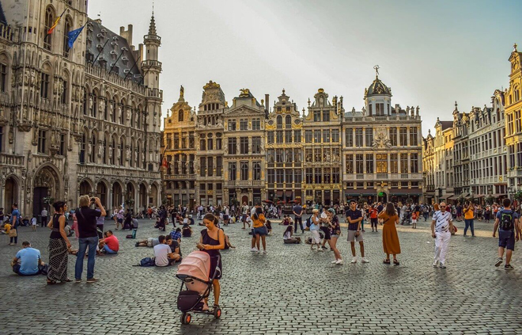
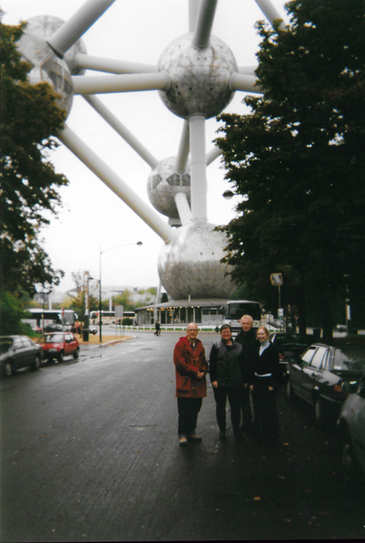
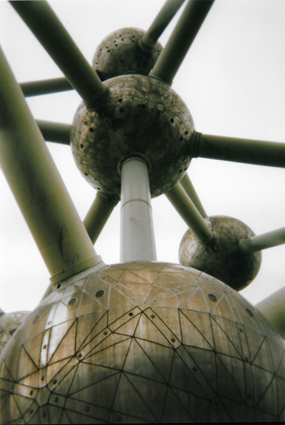

Brussels - October 2001

A surprise 50th birthday treat for Seán's sister, Marie. We took the Eurostar train to Brussels and met her as she came through the turnstiles at Brussels station and then whisked her off for a gourmet lunch. First of all however we stopped off at the Atomium - a landmark building, originally constructed for the 1958 Brussels World’s Fair (Expo 58). Now a museum, it was designed by the engineer André Waterkeyn and architects André and Jean Polak and stands 335 feet tall. Its nine stainless steel clad spheres are connected in the shape of a unit cell that could represent an iron crystal magnified 165 billion times. Tubes connecting the spheres enclose stairs, escalators and an elevator (in the central, vertical tube) to allow access to the five habitable spheres, which contain exhibit halls and other public spaces. The top sphere includes a restaurant which has a panoramic view of Brussels.

